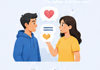
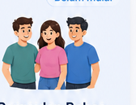
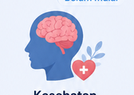
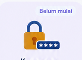
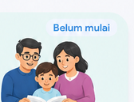
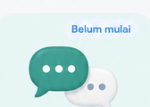
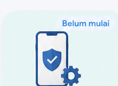

Progress belajarmu
Yuk mulai materi pertamamu hari ini.
Aktivitas Hari Ini
0/3 selesaiTantangan Hari Ini
Selesaikan minimal 2 aktivitas hari ini untuk bonus XP.
0/2 aktivitasModul Saya
0/10 selesaiSelesaikan 1 aktivitas hari ini untuk mempertahankan streak.
Materi Edukasi
5 materiPergaulan Sehat

Free Sex
Revenge Porn

Pergaulan Bebas

Kesehatan Mental
Edukasi Digital
2 materiLiterasi AI & Deepfake

Keamanan Digital
Materi untuk Orang Tua
3 materi
Pendampingan Remaja

Komunikasi Orang Tua & Anak

Pengawasan Digital
Uji Pemahamanmu
Lv. 1 7 tantanganCek Hubunganku
Kenali pola dalam hubunganmu lewat 7 pertanyaan cepat.
Cek Pertemanan Ku
Kenali kualitas pertemananmu — sehat atau perlu diperhatikan?
Mood Quest
Uji pemahamanmu lewat 4 situasi emosional & pilih strategi sehat.
Latihan Pergaulan Sehat
Baca skenario pergaulan dan pilih respons yang paling sehat.
Digital Defender Challenge
Pilih tindakan paling aman dalam 4 situasi digital sehari-hari.
Pemahaman Pergaulan Bebas
Baca skenario kehidupan remaja, lalu pilih respons yang paling sehat dan aman.
Asli atau Deepfake?
Baca ciri-ciri tiap kasus, lalu tebak apakah kontennya asli atau deepfake.
Pergaulan Sehat
Bangun hubungan yang positif, aman, dan saling menghargai.
Ciri pergaulan sehat
Saling menghargai, saling mendukung, dan menjaga batasan pribadi.
Tips berteman sehat
Pilih teman yang memberi pengaruh positif dan berani menolak ajakan yang tidak baik.
Materi Pergaulan Sehat
- 1Pergaulan sehat adalah hubungan dengan orang lain yang dibangun dengan saling menghargai, menjaga batasan, dan memberi pengaruh positif.
- 2Ciri-cirinya: saling menghargai, saling mendukung, bisa berkata "tidak", menghargai batasan pribadi, serta tidak memaksa atau merugikan orang lain.
- 3Tips berteman sehat: pilih teman yang memberi pengaruh positif, berani menolak ajakan yang tidak baik, jaga batasan diri, komunikasikan masalah dengan baik, dan jangan takut menjauh dari lingkungan yang merugikan.
Coba Latihan Pergaulan Sehat
Latihan skenario interaktif untuk menguji responsmu sehari-hari.
Latihan Pergaulan Sehat
Baca setiap skenario pergaulan dengan saksama, lalu pilih respons yang paling sehat dan aman untukmu.
Memahami Free Sex dan Risikonya
Edukasi tanpa menghakimi — tentang batasan diri, consent, dan pengambilan keputusan yang aman dan bertanggung jawab.
Consent dan batasan diri
Pentingnya persetujuan dan menyampaikan batas pribadi dengan tegas.
Berani berkata tidak
Cara menolak dengan percaya diri dan mencari bantuan saat merasa tertekan.
Materi Free Sex dan Risikonya
- 1Apa yang dimaksud dengan hubungan seksual, dijelaskan secara edukatif dan sesuai usia.
- 2Pentingnya consent / persetujuan dalam setiap bentuk hubungan.
- 3Batasan diri — mengenali dan menyampaikan batas pribadi dengan tegas.
- 4Risiko kehamilan yang tidak direncanakan pada usia remaja.
- 5Risiko infeksi menular seksual dan pentingnya menjaga kesehatan reproduksi.
- 6Dampak psikologis yang mungkin terjadi setelah pengalaman yang tidak diinginkan.
- 7Pengaruh tekanan teman sebaya dalam pengambilan keputusan.
- 8Mengenali manipulasi atau pemaksaan dalam hubungan.
- 9Cara mengatakan "tidak" dengan percaya diri dan jelas.
- 10Cara mencari bantuan ketika merasa tertekan atau tidak nyaman.
Revenge Porn: Ketika Privasi Disalahgunakan
Memahami penyebaran konten intim tanpa persetujuan, sextortion, dan grooming — serta langkah aman jika hal ini terjadi.
Jaga privasi digital
Berpikir dua kali sebelum mengirim konten pribadi.
Langkah aman jika terjadi
Simpan bukti, jangan penuhi tuntutan pelaku, dan ceritakan kepada orang dewasa tepercaya.
Materi Revenge Porn
- 1Apa itu penyebaran konten intim tanpa persetujuan (NCII) dan mengapa hal ini berbahaya.
- 2Mengenali manipulasi dan ancaman digital, termasuk sextortion dan grooming.
- 3Cara menjaga privasi digital dan berpikir dua kali sebelum mengirim konten pribadi.
- 4Cara mengenali tanda-tanda ancaman sejak dini.
- 5Apa yang harus dilakukan jika konten sudah tersebar, termasuk menyimpan bukti dan melapor.
- 6Pentingnya tidak menyalahkan korban dalam situasi apa pun.
Jika Ini Terjadi Padamu
- 01Jangan panik — tarik napas dan cari orang dewasa yang kamu percaya.
- 02Jangan memenuhi tuntutan pelaku, termasuk permintaan uang atau konten tambahan.
- 03Jangan menghapus bukti penting seperti chat, screenshot, atau tautan.
- 04Simpan screenshot, URL, dan informasi akun pelaku jika aman untuk dilakukan.
- 05Blokir dan laporkan akun tersebut setelah bukti diamankan.
- 06Ceritakan kepada orang dewasa yang dipercaya — orang tua, guru, atau konselor.
- 07Hubungi pihak yang kompeten untuk mendapatkan bantuan lebih lanjut.
- 08Konsultasikan kondisi psikologismu kepada profesional.
Cek Hubunganku
Jawab 7 pertanyaan untuk mengenali pola dalam hubunganmu. Jawabanmu bersifat pribadi dan tidak disimpan.
Cek Pertemanan Ku
Jawab 7 pertanyaan untuk mengenali kualitas pertemananmu. Jawabanmu bersifat pribadi dan tidak disimpan.
Keamanan Digital untuk Remaja
Materi tentang menjaga akun, data pribadi, dan bersikap waspada saat beraktivitas online.
Jaga akun dan data pribadi
Password kuat dan tidak sembarangan membagikan data pribadi.
Waspada penipuan online
Kenali phishing, tautan mencurigakan, dan akun palsu.
Materi Keamanan Digital
- 1Menjaga password dan akun agar tidak mudah diretas.
- 2Melindungi data pribadi — nama lengkap, alamat, lokasi, dan foto.
- 3Mengenali penipuan online, termasuk phishing dan tautan mencurigakan.
- 4Menghadapi cyberbullying dengan aman dan tahu ke mana melapor.
- 5Mengenali manipulasi di internet, termasuk akun palsu dan grooming.
- 6Cara menggunakan media sosial dengan aman dan bertanggung jawab.
Coba Digital Defender Challenge
Mini game terpisah untuk menguji kewaspadaan digitalmu lewat 4 situasi sehari-hari.
Digital Defender Challenge
Pilih tindakan paling aman dalam 4 situasi digital sehari-hari.
Kesehatan Mental Remaja
Materi tentang mengenali emosi, mengelola stres, dan tahu kapan perlu mencari bantuan.
Kenali dan kelola emosi
Menghadapi stres sekolah dan kehidupan sehari-hari.
Bicara dengan orang tepercaya
Tahu kapan perlu mencari bantuan orang dewasa atau tenaga profesional.
Materi Kesehatan Mental Remaja
- 1Mengenali dan mengelola emosi sehari-hari.
- 2Menghadapi stres sekolah dan kehidupan sehari-hari.
- 3Pentingnya berbicara dengan orang tepercaya.
- 4Membangun kebiasaan sehat untuk menjaga kesejahteraan diri.
- 5Cara mendukung teman dengan baik tanpa menghakimi.
- 6Kapan perlu mencari bantuan dari orang dewasa atau tenaga profesional.
Coba Mood Quest
Mini game terpisah untuk mengenali suasana hatimu lewat situasi sehari-hari.
Mood Quest
Hadapi 4 situasi sehari-hari, kenali emosimu, lalu pilih strategi coping yang paling sehat. Santai saja, ini bukan tes benar-salah!
Pergaulan Bebas
Kenali risiko pergaulan bebas dan latih dirimu memilih tindakan yang sehat dan aman.
Kenali pengaruh teman
Tekanan teman sebaya dan cara mengatakan "tidak".
Ambil keputusan yang aman
Menjaga batasan diri dan mengenali situasi berisiko sejak awal.
Materi Pergaulan Bebas
- 1Mengenali pengaruh lingkungan pertemanan.
- 2Tekanan dari teman sebaya dan cara mengatakan "tidak".
- 3Menjaga batasan diri dalam pergaulan.
- 4Mengambil keputusan yang aman.
- 5Mengenali situasi berisiko sejak awal.
- 6Mencari bantuan dari orang yang dipercaya.
Coba Mini Game Pemahaman Pergaulan Bebas
Mini game terpisah untuk melatih responsmu lewat skenario kehidupan remaja.
Pemahaman Pergaulan Bebas
Baca skenario kehidupan remaja, lalu pilih respons yang paling sehat dan aman.
Literasi AI & Deepfake
Kenali cara kerja AI generatif, risiko deepfake, dan etika penggunaannya agar kamu tidak mudah tertipu atau menjadi korban.
Kenali ciri deepfake
Gerakan wajah kaku, kedipan mata tidak wajar, dan pencahayaan tidak konsisten.
Langkah aman jika jadi korban
Simpan bukti, jangan sebarkan, dan laporkan.
Materi Literasi AI & Deepfake
- 1Apa itu kecerdasan buatan (AI) dan bagaimana AI dapat membuat gambar, suara, atau video.
- 2Apa itu deepfake — konten wajah atau suara palsu yang dibuat menyerupai seseorang tanpa izin.
- 3Ciri-ciri umum konten deepfake: gerakan wajah kaku, kedipan mata tidak wajar, pencahayaan tidak konsisten, dan suara yang terdengar datar.
- 4Risiko deepfake bagi remaja, termasuk pencemaran nama baik dan penipuan identitas.
- 5Etika penggunaan AI — tidak menyalahgunakan teknologi untuk memalsukan atau merugikan orang lain.
- 6Langkah aman jika menemukan atau menjadi korban konten deepfake: simpan bukti, jangan sebarkan, dan laporkan.
Coba Asli atau Deepfake?
Mini game terpisah untuk menguji kejelianmu mengenali konten deepfake lewat 4 kasus.
Asli atau Deepfake?
Baca ciri-ciri pada tiap kasus, lalu tebak apakah konten tersebut asli atau deepfake.
Pendampingan Remaja untuk Orang Tua
Panduan bagi orang tua untuk hadir dan mendampingi remaja secara emosional saat menghadapi masa sulit.
Mengenali tanda anak butuh perhatian
Perubahan perilaku yang perlu diperhatikan orang tua.
Menjadi pendamping yang tenang
Cara bersikap saat anak sedang menghadapi masa sulit.
Materi Pendampingan Remaja
- 1Peran orang tua sebagai pendamping, bukan penghakim, saat anak menghadapi masalah apa pun.
- 2Mengenali tanda perubahan perilaku — menarik diri, murung, cemas berlebihan, atau perubahan pola tidur dan makan.
- 3Cara tetap tenang dan tidak panik saat anak pertama kali bercerita tentang masalah yang dialaminya.
- 4Memberi rasa aman terlebih dahulu sebelum bertanya detail kejadian yang dialami anak.
- 5Mendampingi anak mencari bantuan profesional yang sesuai, seperti psikolog atau konselor sekolah.
- 6Menjaga kestabilan emosi diri sendiri sebagai orang tua agar bisa terus hadir secara konsisten untuk anak.
- 7Kapan orang tua sendiri perlu mencari dukungan atau konsultasi profesional.
Komunikasi Orang Tua & Anak
Panduan membangun kebiasaan komunikasi terbuka dan mendengarkan aktif sehari-hari dengan remaja.
Membuka percakapan
Cara memulai obrolan tanpa membuat anak merasa diinterogasi.
Mendengarkan aktif
Memberi perhatian penuh saat anak sedang bercerita.
Materi Komunikasi Orang Tua & Anak
- 1Cara membuka percakapan tentang topik sensitif tanpa membuat anak merasa diinterogasi.
- 2Menggunakan bahasa yang sesuai usia anak agar pesan tersampaikan dengan jelas.
- 3Mendengarkan secara aktif — memberi perhatian penuh tanpa memotong atau langsung menghakimi.
- 4Menghindari reaksi berlebihan seperti marah, panik, atau menyalahkan saat anak bercerita hal sulit.
- 5Memilih waktu dan suasana yang tepat agar anak merasa nyaman untuk terbuka.
- 6Menjadikan komunikasi terbuka sebagai kebiasaan rutin sehari-hari, bukan percakapan sekali waktu.
Pengawasan Digital
Panduan keamanan digital keluarga dan cara mengenali risiko digital yang dihadapi anak.
Cyber safety keluarga
Keamanan digital yang bisa diterapkan bersama di rumah.
Materi Pengawasan Digital
- 1Menetapkan aturan penggunaan gawai dan media sosial secara bersama, bukan sepihak.
- 2Mengenali risiko digital pada anak: grooming, sextortion, dan penyebaran konten pribadi tanpa izin.
- 3Memantau aktivitas digital anak secara wajar tanpa melanggar rasa percaya yang sudah dibangun.
- 4Mengenali tanda anak mengalami masalah digital, seperti menarik diri saat memakai gawai atau menyembunyikan layar.
- 5Mengaktifkan pengaturan privasi, kata sandi kuat, dan verifikasi dua langkah pada akun anak.
- 6Mengenalkan fitur laporkan dan blokir di aplikasi yang digunakan anak sehari-hari.
Ruang Konsultasi NARA
Pilih pendamping yang tepat: Guru BK untuk bantuan langsung di sekolah, atau Layanan Psikologis untuk konsultasi profesional. Semua sesi rahasia dan bisa pakai nama samaran.
Guru BK
Dapatkan bantuan terkait masalah sekolah, belajar, pertemanan, dan konflik.
- Masalah di lingkungan sekolah
- Kesulitan belajar
- Pergaulan dan pertemanan
- Konflik yang butuh pendampingan sekolah
Layanan Psikologis
Bicarakan perasaan, stres, dan masalah pribadi bersama layanan psikologis secara rahasia.
- Perasaan dan kondisi yang mengganggu aktivitas
- Arahan profesional yang tepat
- Konsultasi masalah pribadi lebih mendalam
Privasi dan Kenyamananmu Penting
NARA dirancang untuk membantu kamu menemukan akses pendampingan dan informasi yang tepat. Bagikan informasi pribadi seperlunya dan gunakan layanan konsultasi secara bertanggung jawab.
Tanya RANA AI
RANA membantu menjelaskan materi dan menjawab pertanyaan umum — tanpa menghakimi, dan selalu mengarahkanmu ke bantuan profesional bila diperlukan.
Contoh pertanyaan cepat
RANA AI
● Teman Belajar AmanTim Pengembang & Kontak
Kenali tim di balik NARA dan cara menghubungi kami, terpisah dari informasi hak cipta platform.
Tim Pengembang
Dewi Sholekah, S.Kom.
Pendampingan konten dan arahan proyek
Kritik & Saran
Punya kritik atau saran untuk NARA? Sampaikan kepada tim developer agar NARA dapat terus berkembang menjadi lebih baik.